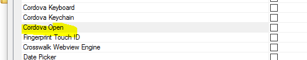

Videos
| UX Component - Ink Control | Image Annotation using the Ink Control in a Data Bound UX Component |
The ink control allows you to create sketches by 'drawing' with your mouse, any type of pointing device, or with your finger (on a device that supports touch). A common use of the ink control is to annotate images. The image you want to annotate is shown as the background to the ink control and then you can draw 'on top of' the image. When the data are saved the ink is stored separately from the image in a long text field.
In this video we show how a data bound UX component that allows a user to upload images can be configured to allow the user to annotate the images that are uploaded. Watch Video - Part 1 Watch Video - Part 2 Watch Video - Part 3 Watch Video - Part 4 Download Component Download SQL Table Definition Date added: 2016-10-30 |
| UX Component - ControlBar Control | Defining Disclosure Forms using the Disclosure Form Builder |
In the video 'Displaying a Modal Pop-up Form using a Disclosure' we show how a modal pop-up form can be displayed using a Disclosure. The definition of the HTML for the form is fairly tedious because it is completely hand coded.
In this video we show how the Disclosure Form Builder can be used to make it easier to define the form HTML. Watch Video - Part 1 Watch Video - Part 2 Download Component Date added: 2016-10-30 |
| UX Component ControlBar Control | Display Modal Message Dialogs using Disclosures |
Modal messages (such as confirmations, progress, feedback) as commonly used when designing the user interface for an application. ControlBar disclosures make displaying these messages particularly easy.
In this video we show how the ControlBar can be configured to display three different types of message dialogs: basic information dialogs (one button), confirmation dialogs (two buttons) and wait dialogs (no buttons). Watch Video - Part 1 Watch Video - Part 2 Watch Video - Part 3 Download Component Date added: 2016-10-30 |
| UX Component - List Control | Specifying Sort Criteria when Filtering a List |
Action Javascript allows you to easily define fields on a UX where the user can specify search criteria for a List control on the UX ( much like the Search Part in a Grid). Now you can also define sort criteria.
In this video we show how the Filter Records in a List action in Action Javascript can be configured to allow sort criteria to be specified. Watch Video Download Component Date added: 2016-1-03 |
| UX Component - ControlBar Control | Adding List Navigation Buttons to a ControlBar |
When you define a List control, you can specify that the List should be paginated. If you set the pagination method to 'Navigation Buttons' then you must define buttons to move to the next and previous page of records. In a mobile application that uses a ControlBar in a Panel header or footer, it is desirable to place these navigation buttons in the ControlBar.
In this video we show how you can quickly add List navigation buttons to a ControlBar by selecting the 'Pre-defined buttons' option when adding ControlBar items to your ControlBar definition. Watch Video Date added: 2016-11-05 |
| UX Component - FormView Control | Using a FormView Control to Edit Data in a List Control - Master-Detail Forms - Very Large Forms |
By default, when you configure a List with a Detail View (so that edits can be made to the List data), the Detail View is composed using individual controls (e.g. Textbox, Textarea, Dropdown, etc). If the Detail View has a large number of fields, then composing the Detail View using individual controls will be inefficient and will result is a very large UX component that may not perform well.
An alternative approach is to use the FormView control to implement the List's Detail View. This is extremely efficient and will allow you to build UX components that edit very large forms but still perform very well. In this video we show how a master-detail Form is built using a FormView control to edit the fields in the Master table and a second FormView control to edit the fields in the Detail Table. The master table has 100 fields and the detail table has 100 fields, so in total, the UX component is editing 200 fields. Watch Video - Part 1 Watch Video - Part 2 Watch Video - Part 3 Watch Video - Part 4 Download Component Download Script to Create SQL Tables Date added: 2016-11-08 |
| UX Component - FormView Control | Tutorial - Building a Mobile Master-Detail Form using The List, FormView and ControlBar Controls - |
In this video tutorial we show how a mobile app can be built to implement a master-detail form using the FormView control. The app will allow users to edit data from the Customers and Orders table in the sample Northwind database. This is a classic master-detail form: Each customer has multiple orders. The UX component uses two Lists joined in a parent-child relationship. The parent List displays data from the Customer table and the child List display the related orders from the Orders table.
Each List has a Detail View, but in both cases, the Detail View is implemented using the FormView control. Once the basic functionality of the app has been built, the app is 'mobilized' by wrapping the various sections of the component in PanelCards and a ControlBar is added to implement navigation between the various parts of the application. Watch Video - Part 1 Watch Video - Part 2 Watch Video - Part 3 Watch Video - Part 4 Watch Video - Part 5 Watch Video - Part 6 Watch Video - Part 7 Watch Video - Part 8 Watch Video - Part 9 Watch Video - Part 10 Download Components Date added: 2016-11-10 |
| UX Component | Displaying a Custom Wait Message while a Large Mobile App is Loading in the Background |
If you have built a very large mobile App which takes some time to load, you might want to display a custom wait message to the user while the main UX component of your App is loaded in the background.
In this video we show how this can be done using a simple 'startup' UX component. Watch Video Download Components Date added: 2016-12-11 |
| UX Component - PhoneGap | PhoneGap - Using the PhoneGap - Open File with Native Application Action to View PDF Files in a Mobile Application |
The PhoneGap cordova-open plugin allows you to open various file types using the associated native app on a mobile device. For example, if you open a .pdf file, the PDF file is displayed using the native PDF viewer app on the mobile device. If you open a .mp4 file, the video is displayed using the native video viewer on the device. A common use case for this plugin is to download several files when a connection is available so that the files can then be viewer later on when no connection is available.
In this video we show how an application is built that shows a list of PDF files. These files are downloaded from the server and stored in the filesystem on a mobile device. Then we show how each of the downloaded files can be viewed using the PDF viewer on the mobile device. Because the PDF files are stored in the filesystem on the device, they can be viewed even if the device no longer has a connection. The application uses the 'PhoneGap - Open File with Native Application' action to display the .pdf file. Watch Video - Part 1 Watch Video - Part 2 Watch Video - Part 3 Date added: 2016-12-27 |
| UX Component - PhoneGap | PhoneGap- Viewing Reports in PDF Format on a Mobile Device |
The PhoneGap cordova-open plugin allows you to open files (such as .pdf files) using the natvie application associated with that file type on a mobile device. This plugin is particularly useful for viewing PDF files. The Alpha Anywhere report writer can save reports as PDF files. The cordova-open plugin therefore fits really well with the Alpha Anywhere report writer because you can build applications that generate reports as PDF files and then display the reports on a mobile device using the cordova-open plugin.
In this video we show how you can use Action Javascript (the 'PhoneGap - Open File with Native Application' action) to generate a PDF file from an Alpha Anywhere report, then download the resulting PDF file to a mobile device and display it using the native PDF viewer. Watch Video - Part 1 Watch Video - Part 2 Date added: 2016-12-27 |
Features
Xbasic - Javascript Web Tokens (JWT) - Additional Options - Additional options have been added to the Xbasic classes for generating Javascript Web Tokens. For more details refer to the documentation.
IIS Application Server - PKI Authentication - Support has been added for PKI authentication. For more details refer to the
documentation.
Watch Video - Part 1
Watch Video - Part 2
Xbasic - Extension::JSON Class - New methods - New methods have been added to the extension::JSON class to make it easier to extract data from a JSON object.
NOTE: You can generally easily extract data from a JSON string by parsing the JSON to an Xbasic dot variable, using the json_parse() method. But if the JSON has property names that are not valid Xbasic variable names, then you cannot parse the JSON. Also, parsing an extremely large JSON string could be slow. The methods described here do not require the JSON to be parsed into an Xbasic dot variable, and work for all types of JSON property names.
Methods 1
extension::JSON::OffsetToPath(json,offset[,base])
where:
- json - string of JSON data
- offset - number - position in the JSON string - e.g. 1345 (character 1345 in the JSON string)
- base - 0 for Javascript and 1 for Xbasic (since Xbasic arrays are 1 based)
Returns a 'path' to the JSON element that contains the text at the specified offset.
Example:
Assume that json is a variable that contains the sample JSON shown below
?extension::JSON::OffsetToPath(json,540,1)
= "[1].orders[1].orderItems[1]"
This means that the path in the JSON to the element that contains the text at position 540 is:
[1].orders[1].orderItems[1]
Method 2
extension::JSON::PathToOffset(json,path[,base])
where:
- json - string of JSON data
- path - path to an element in the JSON string
- base - 0 for Javascript and 1 for Xbasic (since Xbasic arrays are 1 based)
Returns the offset in the JSON string for the element specified by the path.
Example:
Assume that json is a variable that contains the sample JSON shown below
?extension::JSON::PathToOffset(json,"[1].orders[1].orderItems[1]",1)
= 355
Method 3
extension::JSON::PathExtract(json,path[,base])
where:
- json - string of JSON data
- path - path to an element in the JSON string
- base - 0 for Javascript and 1 for Xbasic (since Xbasic arrays are 1 based)
Extracts a JSON element for a specified path
Example:
?extension::JSON::PathExtract(json,"[1].orders[1].orderItems[1]",1)
= {
"OrderID": "10643",
"ProductID": "28",
"Quantity": "15",
"UnitPrice": "45.6"
}
Sample JSON string for above examples:
[
{
"CustomerID": "ALFKI",
"CompanyName": "Alfreds Futterkiste",
"orders": [
{
"OrderID": "10643",
"CustomerID": "ALFKI",
"OrderDate": "09/25/1995 12:00:00 00 am",
"orderItems": [
{
"OrderID": "10643",
"ProductID": "28",
"Quantity": "15",
"UnitPrice": "45.6"
},
{
"OrderID": "10643",
"ProductID": "39",
"Quantity": "21",
"UnitPrice": "18"
},
{
"OrderID": "10643",
"ProductID": "46",
"Quantity": "2",
"UnitPrice": "12"
}
]
},
{
"OrderID": "10692",
"CustomerID": "ALFKI",
"OrderDate": "11/03/1995 12:00:00 00 am",
"orderItems": [
{
"OrderID": "10692",
"ProductID": "63",
"Quantity": "20",
"UnitPrice": "43.9"
}
]
},
{
"OrderID": "10702",
"CustomerID": "ALFKI",
"OrderDate": "11/13/1995 12:00:00 00 am",
"orderItems": [
{
"OrderID": "10702",
"ProductID": "3",
"Quantity": "6",
"UnitPrice": "10"
},
{
"OrderID": "10702",
"ProductID": "76",
"Quantity": "15",
"UnitPrice": "18"
}
]
},
{
"OrderID": "10835",
"CustomerID": "ALFKI",
"OrderDate": "02/15/1996 12:00:00 00 am",
"orderItems": [
{
"OrderID": "10835",
"ProductID": "59",
"Quantity": "15",
"UnitPrice": "55"
},
{
"OrderID": "10835",
"ProductID": "77",
"Quantity": "2",
"UnitPrice": "13"
}
]
},
{
"OrderID": "10952",
"CustomerID": "ALFKI",
"OrderDate": "04/15/1996 12:00:00 00 am",
"orderItems": [
{
"OrderID": "10952",
"ProductID": "6",
"Quantity": "16",
"UnitPrice": "25"
},
{
"OrderID": "10952",
"ProductID": "28",
"Quantity": "2",
"UnitPrice": "45.6"
}
]
},
{
"OrderID": "11011",
"CustomerID": "ALFKI",
"OrderDate": "05/09/1996 12:00:00 00 am",
"orderItems": [
{
"OrderID": "11011",
"ProductID": "58",
"Quantity": "40",
"UnitPrice": "13.25"
},
{
"OrderID": "11011",
"ProductID": "71",
"Quantity": "20",
"UnitPrice": "21.5"
}
]
}
]
}
]
Sample Xbasic script that shows an Xdialog to show how these methods can be used:
'sample.json contains some sample json data
dim json as c = file.to_string("C:\data\sample.json")
dim def.text as c = json
dim def.object as p
dim selection as c
dim subselect as c
ui_dlg_box("JSON",<<%dlg%
{watch=def.object.get_selection_start(.t.)!cursor}
[%M;K%.100,20def];
Path;
[.100path] <copy<;
[.100selection] <select>;
[%M;K%.100,5subselect];
%dlg%,<<%code%
if a_dlg_button = "cursor" then
a_dlg_button = ""
dim pos as n = def.object.get_selection_start(.t.)
path = extension::JSON::OffsetToPath(strtran(def.text,crlf()," "),pos)
else if a_dlg_button = "copy" then
a_dlg_button = ""
selection = path
else if a_dlg_button = "select" then
a_dlg_button = ""
dim pos as n = extension::JSON::PathToOffset(strtran(def.text,crlf()," "),selection)
if pos < 1 then
dim subselect as c = extension::JSON::PathExtract( strtran(def.text,crlf()," "),selection)
def.object.select(pos,len(subselect) )
def.object.show_caret()
else
ui_msg_box("","Not found")
end if
end if
%code%)
UX Component - Client-Side Properties - On Get Value and On Set Value - Two new client-side properties have been added for Data Controls in a UX component.
- On Get Value Javascript - fires when the {dialog.object}.getValue() method is called. Allows you to transform the value returned by the method.
- On Set Value Javascript - fires when the {dialog.object}.setValue() method is called. Allows you to transform the value used to set the control's value.
In both cases, your Javascript can reference a variable called value and must return a value. For example, in the following example, the .getValue() method will return the upper case version of the control's value
return value.toUpperCase()
These methods can be used to translate a stored value into a display value and vice versa. For example, you might want to display a part description, but store the part number. The data used to to the translation might be stored in a client-side data cache.
UX Component - PhoneGap - Cordova-Open Plugin - The PhoneGap genie now exposes the Cordova-Open plugin. This plugin allows you to open files using their associated native application. For example, if you open a file with a .pdf extension the plugin will open the file using the native PDF application on the device. If you open a file with a .mov extension, the plugin will open the file using the native video player on the device.
The Cordova Open plugin is selected in the PhoneGap genie as shown in the image below.

There are many use cases for the Cordova-Open plugin, but PDF files is perhaps the most compelling use case. Displaying PDF files in a mobile application can be tricky because the browsers on mobile devices do not have built-in PDF viewers as is typical with desktop browsers.
Another great use case for this plugin is a mobile app that downloads multiple files (pdf, video, audio, excel, word, etc.) and then stores these files in the filesystem on the device so that they can be viewer later when the device is no longer connected to the internet. For more information on techniques for downloading files to a mobile device, see this topic in the Tips section: Downloading Files to a Mobile Device.
A new action in Action Javascript (PhoneGap - Open File with Native Application) makes it easy to use the Cordova-Open plugin in mobile applications.
The image below shows how a PDF file appears in the Native PDF viewer on an iPhone (in this case the PDF file was created by generating a report and saving the report output to a PDF file). Notice the Done button that will return you to the app when you close the Native Viewer.
UX Component - Action Javascript - PhoneGap - Open File with Native Application Action - This action allows you to open a file on a mobile device using the associated native application.
Watch Video - Part 1
Watch Video - Part
2
Watch Video - Part
3
NOTE: You can only use this action in a PhoneGap application. The PhoneGap application must load the Cordova Open plugin.
The action allows you to:
- Open a file that is already present in the file system of the mobile device
- Open a file that is remote.
- Open a file that is dynamically created by making an Ajax callback to the server
- Open a PDF report that is created by making an Ajax callback to the server to run a report and save the report output as a PDF file.
When you select the PhoneGap - Open File with Native Application action in Action Javascript, the following dialog is shown:
- File is remote - specify if you want to open a local file, or a remote file (i.e. a file that is on a remote server)
- Filesystem part - the part of the device filesystem where the file is stored. You can specify a Javascript function to return the filesystem part by prefixing the name of the Javascript function with javascript:, For example javascript:getFileSystemPart.
- Filename - the name of the file you want to open. This can include a relative path if the file is stored in a sub-directory. E.g. PDF/mypdffile.pdf. You can also specify a Javascript function to return the filename by prefixing the name of the Javascript function with javascript:, For example javascript:getFileName.
If you specify that the file is remote, you must specify the File URL.
- File URL - the URL of the file you want to open. For example: http://alphafiles.s3.amazonaws.com/pdffile1.pdf. If the file is stored in the webroot of the Application Server, you can specify a relative filename. For example: pdffile1.pdf. You can specify a Javascript function to return the URL by prefixing the name of the Javascript function with javascript:, For example javascript:getFileURL.
- Make Ajax callback to get the file to view - Specify if an Ajax callback should be made to dynamically create the file that you want to view on the mobile device.
If you specify that you want to make an Ajax callback to get the file to open, you must specify the Ajax callback type
- Ajax callback type - can either be UserDefined or Report. Choose UserDefined if you want to create your own Xbasic function to handle the callback. Choose Report if you want to run a Report that you have defined in your web project and save the report as a PDF file.
- Xbasic function - the name of the Xbasic function that will handle the Ajax callback. In addition to generating the file you want to view on the mobile device, your Xbasic function must return Javascript to set these variables:
{dialog.object}.__filenameNativeViewer - the URL of the file you want to view.
{dialog.object}.__filenameFriendlyNativeViewer - the friendly name for the file that will be displayed in the title bar of the Viewer app.
TIP: To see an example of how these variables should be set by your Xbasic function, click the smart field for the Xbasic function property. Then click the Show function prototype button.
If you set the Ajax callback type to Report, you must specify which report you want to run.
- Report definition - When you click the smart field for this property a genie opens up (see below) where you can define which report to run.
- onComplete Javascript - the name of a Javascript function to run after the report has been generated. See below for an example of how this property can be used.
NOTE: Alpha Anywhere will automatically send the following Javascript to the client once the report has been created:
{dialog.object}.hideWaitMessage();
This is useful because if you displayed a wait message when invoking the action to save a report as a PDF file, the wait message will automatically be closed once the report has been generated. You do not have to specify an
onComplete Javascript property solely for the purpose of hiding a wait message.
Report Definition Genie
When you click the smart field for the Report definition property, the following dialog is shown where you can specify the name of the report to run and other properties of the report, such as the filter, and order, PDF options (such as whether the PDF file should have a watermark, etc.) and argument bindings.
The filter you define for the report in this dialog is in addition to any filter defined in the report definition itself.
When defining a filter, it is common to use arguments in the filter rather than literal values. For example:
Country = :whatcoutry
rather than
Country = '{country}'
where {country} is the value in a control called Country on the UX component.
To create an argument to use in a report filter click on the Define Arguments button shown in the above image and then bind the argument to a value (either a static value, or a value in a UX control) in the Set Argument Values section of the dialog.
Understanding the onComplete Javascript Property
When you set the Ajax Callback type to Report, the onComplete Javascript property allows you to define the name of a Javascript function that will be called after the report has been generated on the server.
Your function will take a single parameter as its input. This parameter is an object with these properties:
- localFilename - the file name in the filesystem on the device where the report will be saved after it is downloaded to the mobile device.
- reportName - the name of the report that was printed
- fileSystem - the filesystem part where the report PDF file will be stored. e.g. saved, private, public, persistent, temp.
- folder - the name of the folder in which the report PDF file will be stored.
A common use case for this function is to store the name of the report and its associated properties (such as filesystem part, filename, etc), in a List control so that the user can quickly view a previously viewed report by simply viewing the file for that report (which is stored on the device after it is viewed for the first time). This allows the user to view reports even when there is no connection.
For example, the following function would store the report information in a List control called previouslyViewedReports:
(Assume that the List control has columns named filename, reportname, fspart and folder).
function afterReportGenerated(obj) {
var l = {dialog.object}.getControl('previouslyViewedReports');
var _d = [
{
filename: obj.localFilename,
reportname: obj.reportName,
fspart: obj.fileSystem,
folder: obj.folder
}
];
l.appendRows(_d);
}
Alpha Anywhere Application Server - Building Connection Strings - If you have a remote server that does not have the Alpha Anywhere development version installed, building an ad-hoc connection string that you can paste into the a5_appllication.a5i file can be difficult.
There is now a hyperlink on the
Web Server Settings dialog on the Other tab to Open the Connection
String Builder Genie. This opens the regular connection string builder where a new connection can be built and tested. It will also verify if the correct client driver is installed, as the test connection option will fail if the driver is not correct. The generated string is shown in a simple dialog with an option to
Copy to clipboard when the genie is closed. This allows creating and testing a connection in the same environment where it will be used.
Xdialog - {Condition_else} Directive - The
{condition_else} directive makes it much easier to display Xdialogs that have conditional sections that render in the same place. Previously it was necessary to use the {start_pos} directive to get the second and subsequent condition to render in the same space as the first condition.
For example:
ui_dlg_box("Conditional Sections",<<%dlg%
{removeleadingspaces}
{removecomments}
{region}
Condition: [condition^=conditions];
{condition_begin=condition="condition1"}
{region}
This is condition 1;
{endregion}
{condition_else=condition="condition2"}
{region}
This is condition 2;
{endregion}
{condition_else=condition="condition3"}
{region}
This is condition 3;
{endregion}
{condition_else}
{region}
This is any other condition;
{endregion};
{condition_end};
{endregion};
{line=1,0};
{justify=right}<Close>
%dlg%)
The images below show how the Xidialog renders for various conditions. Note that when 'condition4' is selected, the
{condition_else} text is show because there is no handler for this condition.

Xbasic - Sys_shell_wait() Function - SYS_SHELL_WAIT() now has two additional parameters (in addition to the command and the ShowWindow flag):
- Timeout 0 (millliseconds - defaults to -1 = INFINITE)
- TerminateOnTimeOut - (defaults to FALSE) - If a timeout occurs and this parameter is set to true, the created process will be terminated using a pattern that injects a thread into the new process and calls Exit Process. This is to prevent handles from remaining locked. Kill process (TerminateProcess()) does not release handles gracefully.
Note: SYS_SHELL_WAIT() does not throw any errors if something fails.
There is a new function called
Run() that accepts all of the same parameters (in fact is now called by
sys_shell_wait() ) but will return an error if something doesn't work.
Example Interactive Window Session
Run("CMD.EXE /C \"DIR C:\*.* /s\"", .t.,1000,.t.)
ERROR: Application timed out.
SYS_SHELL_WAIT("CMD.EXE /C \"DIR C:\*.* /s\"", .t.,1000,.t.)
UX Components - List and ViewBox Controls - SQL Data Sources - Security and Server-side Show Hide Expressions - You can now apply security settings and server-side show/hide expressions to individual columns in the SQL queries that are used to populate List and ViewBox controls.
To define security and/or server-side show/hide expressions for individual columns in a SQL query, click on the smart field for the Security and Show/hide Expressions property (as shown in the image below)
This will open a builder where you can define settings for each column in the SQL query.
At run-time, before the SQL is executed, if any of the columns in the SQL SELECT statement have security or show/hide expressions, the columns that should not be shown are removed from the SQL SELECT statement. This means that if a user is not authorized to see a particular column in a SQL query, the data that are sent to the client does not include the excluded columns.
Contrast this with applying security or show/hide expressions to individual fields in the List (in the 'Fields' pane of the List builder). When you apply security to List fields that merely removes a hidden column from the List display. But the data for the hidden column is still set to the client and would be visible if the user viewed the source of the page.
NOTE: You can only apply security and show/hide settings to the SQL if Alpha Anywhere can parse the SQL statement. For example, if the data source for a List is a stored procedure, then, since this is not a parse-able statement, you cannot apply security and show/hide settings.
UX Component - Step Indicator Control - The Step Indicator control is used to show what step a user is on in a multi-step action.
The image below shows a Step Indicator control configured to show four steps, labeled One, Two, Three and Four
When you add a Step Indicator control you can specify as many steps as you want and you can define the labels for each step. You can also control the color of the completed steps (blue in the above example) and the un-completed steps (gray in the above example).
The Step Indicator control is a Data Control. This means that you can set its value using the {dialog.object}.setValue() method and you can read its value using the {dialog.object}.getValue() method.
For example, to set the above control so that it shows you are at the beginning of the sequence (on the first step) you would use:
{dialog.object}.setValue('name of control',0)
To set the control's value so that it shows you are on step Three (i.e. as shown in the above image) you would use:
{dialog.object}.setValue('name of control',2)
To add a new Step Indicator control to a UX, select the [More...] entry in the UX toolbox in the Data Controls section.

This display a list of additional control types.
To configure a Step Indicator control, click the smart field for the control's Control Properties property.
In the image below, the 'Dot' size has been increased, the 'Show step indicators as circles' property has been turned off and the 'Dot size' has been set to '40px'. A small border radius of 2px has been set so that the 'dot' (squares in this case) have slightly rounded edges.
Xbasic - a5Helper_SQL_ApplySecurity() Function - The a5Helper_SQL_ApplySecurity() function applies security and server-side show/hide expressions to a SQL SELECT Statement. Any column that is not authorized by the security group or server-side show/hide expression is removed from the SQL Select statement.
The SQL statement you pass to this function must be parseable. If Alpha Anywhere cannot parse the statement (e.g. the SQL is a call to a stored procedure), the function returns the original SQL statement.
If a column does not have a security setting or server-side show/hide expression is will be included in the SQL statement.
If a column has a defined security setting that the column will only be included in the SQL statement if the logged in user is a member of one of the security groups specified by the column's security setting.
If a column as a show/hide expression the column will only be included in the SQL statement if the expression evaluates to a true result.
Syntax
c SQLStatement = a5Helper_SQL_ApplySecurity( sql as c , securityDef as c , loggedInGroups as c)
Where:
- sql - the SQL statement you want to apply security to
- securityDef - a JSON object that defines the security settings and show/hide expression for selected columns in the SQL statement
- loggedInGroups - the security groups that the current user is a member of
securityDef is a JSON array of objects. Each object in the array has these properties
- column - the column in the SQL statement (must match exactly the way the parsed SQL represents the column. see below)
- security - A comma delimited list of the security groups authorized to see this column
- showHide - A logical expression that evaluates to true or false. Typically the expression will reference session variables.
The column specify in the securityDef must match exactly how the SQL parser represents the column. For example, consider the following column expression
concatenate(customers.name , ', ', customers.contacttitle)
The meaning of this expression is unchanged if the expression is written as:
concatenate( customers.name , ', ', customers.contacttitle )
However, this is not how the expression is represented in the SQL parser. To get the correct representation of the expression, you can use the code below:
dim si as sql::Query::SelectItem
sql2 = "concatenate( customers.name , ', ', customers.contacttitle)"
?si.Parse(sql2)
= .T.
?si.SQLStatement
= "concatenate(customers.name, ', ', customers.contacttitle)"
Example
sql = <<%str%
SELECT customers.CustomerID as cid, customers.CompanyName as compName, customers.ContactName, customers.ContactTitle, concatenate(customers.name,', ',customers.contacttitle) as exp1, orders.OrderID, orders.CustomerID AS CustomerID1, orders.EmployeeID, orders.OrderDate, orders.RequiredDate
FROM customers customers
INNER JOIN orders orders
ON customers.CustomerID = orders.CustomerID
%str%
'define the security settings
dim ss[0] as p
ss[].column = "customers.ContactTitle"
ss[..].security = ""
ss[..].showHide = "session.var1 = \"alpha\""
ss[].column = "concatenate(customers.name, ', ', customers.contacttitle)"
ss[..].security = "Sales,Marketing"
ss[..].showhide = ""
ss[].column = "customers.CompanyName"
ss[..].security = "Administrator"
ss[..].showhide = ""
dim security as c
'Generate a JSON string
security = json_generate(ss)
dim loggedInGroups as c
loggedInGroups = Context.Security.GetUserRoles()
sql2 = a5Helper_SQL_ApplySecurity(sql,security,loggedInGroups)
UX Component - PhoneGap Applications - Delay Function Calls Until PhoneGap is Ready - Typically, when a need to execute a method that can only be run after PhoneGap has loaded, you add code to the onPhoneGap ready client-side event. But in some cases this is not practical and you might already have some code that runs in the onRenderComplete, or onPrepareComplete event and some of the methods in these events need to wait till PhoneGap is ready.
The new {dialog.object}._delayTillPhoneGapReady() method allows you to register function calls that will only be made once PhoneGap is ready.
The syntax is:
{dialog.object}._delayTillPhoneGapReady(functionToExecute, scope, arguments)
For example, say you wanted to call the List Object's ._fetchMediaFiles() method.
Normally your code would be
var lObj = {dialog.object}.getControl('LISTNAME');
lObj._fetchMediaFiles()
This could be rewritten as
var lObj = {dialog.object}.getControl('LISTNAME');
{dialog.object}._delayTillPhoneGapReady(_fetchMediaFiles,lObj)
UX Component - Building Component Programmatically Using Xbasic - Absolute Layout Containers - You can now use the a5wcb_createDialogUsingXbasic() Xbasic function to create a UX component that define a component that contains an Absolute Layout container. This is made possible because the Absolute Layout's absolutePositions property now allows you to specify the variablename of the control in the absolute layout, rather than its idInternal property, which cannot be used because it is dynamically assigned when a5wcb_createDialogUsingXbasic() executes.
dim wp as p
DIM wp.page_fields[0] as P
with wp.page_fields[]
.controltype = "layout_directive_ContainerBegin"
.v.container.subType = "AbsoluteLayout"
.v.container.id = "ABS1"
.v.container.absolutePositions = <<%str%
[
{
variablename:
'c',
top: '7px',
left: '16px',
height: '28px',
width: '139px',
style: 'position: absolute; top: 7px; left: 16px; width: 139px; height: 28px; '
},
{
variablename:
'd',
top: '156px',
left: '141px',
height: '27px',
width: '132px',
style: 'position: absolute; top: 156px; left: 141px; width: 132px; height: 27px; '
}
]
%str%
end with
with wp.page_fields[]
.v.variableName = "c"
.v.breakType = "None"
end with
with wp.page_fields[]
.v.variableName = "d"
.v.label = "Field D"
.v.hasWaterMark = .t.
.v.waterMark.text = "Enter name"
end with
with wp.page_fields[]
.controltype = "layout_directive_Containerend"
end with
a5wcb_createDialogUsingXbasic(wp,"genByXbasic",.t.)
PDF Reports - Embed Fonts - In certain cases, PDF reports generated will not render correctly on iOS devices. This is because, by default, the PDFs are generated with the 'Embed fonts' option set to false. The PDFs do not render on the iOS devices because they use fonts they are not native to the iOS device. The solution is to turn the 'Embed fonts' option on (this is done by opening the Project Properties dialog and going to the PDF Options section).
Now, the Embed fonts option is turned on by default. Since this will result in slightly larger PDF files, some developers might want to not embed fonts in generated PDF files. This can be done by setting the property in the Project Properties.
UX Component - Pre-render Option - Bulk Update - If you have a large number of UX components and you want to turn on the 'Pre-render at design-time' option for each UX component, opening each component, setting the property and then saving the component would be tedious. A new bulk operation allows you to automatically set this property in multiple UX components at once.
Xbasic - Regular Expressions - regex_valid() Function - The regex_valid() function can be used to test if a regular expression is valid.
Examples:
? regex_valid("[.+")
= .F.
The issue with the above failing regular expression is lack of a closing ']'.
? regex_valid("[.+]")
= .T.
? regex_match(".","[.+")
ERROR: Unmatched [ or [^ in character class declaration. The error occurred while parsing the regular expression: '[.+>>>HERE>>>'.
UX and Grid Components - <ProjectStyle> - Compact Styles - Certain of the built-in styles (e.g. 'Alpha') have a 'compact' option. If you set <ProjectStyle> to 'Alpha' you can now specify that you want to use the 'compact' option by setting the <ProjectStyle> to Alpha:compact . In an individual component that is set to use <ProjectStyle> as its style, you can override the global settings of 'compact' or 'non-compact' by specifying:
<ProjectStyle>:compact
or
<ProjectStyle>:notcompact
UX Component - List Control - Show/Hide List Column - A new method has been added to the List control that allows you to show or hide a List column.
Syntax:
<listObject>.showHideColumn(columnNumber,flagShow)
- columnNumber - zero based column number to show or hide
- flagShow - if true, the column is shown. If false, the column is hidden
UX Component - Pre-render at Design-time Option - Warning Message - When you save a UX component that does not have the Pre-render Component at Design-time option turned on, a warning message now comes up telling you that it is recommended to turn this option on because of the significant speed improvement this options will give at run-time.
If you choose not to turn the Pre-render option on, you can specify that the message should not be shown again for this component, or for all components
If you choose to turn the option on you can specify that the option should automatically be set to 'on' for all future UX components that you create.
TIP: If you choose the option to turn on pre-render for all UX components, you can un-set the option by going to View, Settings, Preferences, UX Component.
Xbasic Functions - JSON_to_YAML() - YAML is a markup language that is sometimes used in place of JSON. This function converts JSON to YAML. YAML (yet another markup language) uses nesting to represent hierarchy.
Example
json = <<%str%
{
"fname": "john",
"lname": "public",
"children" : [
{"name": "callie","hobbies": ["minecraft","leggo"]},
{"name": "griffin","hobbies": ["ballet"]}
],
"address": {
"street": "12 and main",
"city": "Squares Ville",
"State": "KY"
}
}
%str%
?json_to_yaml(json)
fname: john
lname: public
children:
- name: callie
hobbies:
- minecraft
- leggo
- name: griffin
hobbies:
- ballet
address:
street: 12 and main
city: Squares Ville
State: KY
Note: This function is just a wrapper around the extension::JSON class.
Xbasic Functions - JSON_from_YAML() - YAML is a markup language that is sometimes used in place of JSON. This function converts YAML to JSON.
yaml = <<%str%
fname: john
lname: public
children:
- name: callie
hobbies:
- minecraft
- leggo
- name: griffin
hobbies:
- ballet
address:
street: 12 and main
city: Squares Ville
State: KY
%str%
json_from_yaml(yaml)
= {
"fname": "john",
"lname": "public",
"children" : [
{"name": "callie","hobbies": ["minecraft","leggo"]},
{"name": "griffin","hobbies": ["ballet"]}
],
"address": {
"street": "12 and main",
"city": "Squares Ville",
"State": "KY"
}
}
Note: This function is just a wrapper around the extension::JSON class.
UX and Grid Component - Live Preview - Edge - When you do a Live preview from the UX or Grid, you can now select Microsoft Edge as the target. (For Windows 10 and above)
UX Component - Google Visualization Libraries- Gantt - Because of a recent change Google made to how their visualization libraries are loaded, if you select the 'gantt' library, you would get a Javascript error. This is now fixed.
Alsp, the sample templates that are available when you create a new UX includes an update example for Google charts. This new component includes as Gantt chart, as shown in the second image.
Xbasic Arrays - DIMMing Arrays with Default Values - When you DIM a new array, you can now specify a default value for each array item. This is especially useful when DIMming arrays for use with .Net code.
Examples:
dim sb[6] as system::Text::StringBuilder = new system::Text::StringBuilder(1024)
? sb[1].capacity
= 1024
? sb[2].capacity
= 1024
...
dim nums[6] as n = rand()
? nums
= [1] = 0.680694580078125
[2] = 0.709716796875
[3] = 0.17425537109375
[4] = 0.60302734375
[5] = 0.752105712890625
[6] = 0.02587890625
dim strs[6] as c = Rand_String(6+int(rand()*10))
? strs
= [1] = "eimpzcugesd"
[2] = "chjhlwuzu"
[3] = "nioseq"
[4] = "gsrslnflqravo"
[5] = "rvaqfaqqu"
[6] = "joexbk"
Xbasic - AlphaDAO SQL::Resultset.toJSON() - The .toJSON() method has been changed so now it create a parseable JSON array of objects. Previously the .toJSON() method was used for an internal function and it generated a special format that was of no general use.
Contrast the AlphaDAO SQL::Resultset.toJSON() with the AlphaDAO SQL::Resultset.toJSONObjectSyntax() method. The later generates a CR-LF delimited string of JSON objects. To turn the output from this method into a parseable string, it is necessary to add the opening and closing square brackets and to terminate each line, except the last, with a comma.
Examples:
dim cn as sql::Connection
cn.Open("::Name::northwind")
cn.PortableSQLEnabled = .t.
cn.Execute("select customerid, contactname, city, country from customers where country = 'canada'")
rs = cn.ResultSet
? rs.tojson()
= [
{"customerid" : "BOTTM", "contactname" : "Elizabeth Lincoln", "city" : "Tsawassenn", "country" : "Canada"},
{"customerid" : "LAUGB", "contactname" : "Yoshi Tannamuri", "city" : "Vancouverr", "country" : "Canada"},
{"customerid" : "MEREP", "contactname" : "Jean Fresnire", "city" : "Montral", "country" : "Canada"}
]
cn.Execute("select customerid, contactname, city, country from customers where country = 'canada'")
rs = cn.ResultSet
? rs.ToJSONObjectSyntax()
= {"customerid" : "BOTTM", "contactname" : "Elizabeth Lincoln", "city" : "Tsawassenn", "country" : "Canada"}
{"customerid" : "LAUGB", "contactname" : "Yoshi Tannamuri", "city" : "Vancouverr", "country" : "Canada"}
{"customerid" : "MEREP", "contactname" : "Jean Fresnire", "city" : "Montral", "country" : "Canada"}
UX Component - List Control and ViewBox Control - Text Select - A new property 'Allow text select' allows you to enable/disable the ability to select text in a List or ViewBox control. Previously this always defaulted to true. Now, this property defaults to false.
UX Component - List Control and ViewBox Control - Multi-select - Shift+Click - When doing a multi-select in a List or ViewBox that is configured to allow multiple selections, shift+click will now select multiple values, following the standard Windows conventions.
Web Publishing - HTTP publish and Optimized Publish - These publish methods will now force a reload of the security data and will clear the UX component cache, so any changes should be reflected in the first request after publish.
UX Component - List Control - Refresh List Data Action - Keep Focus - Child Records - If you refresh List data and you select the option to keep focus on the current selection, child records (if any) will also keep their focus. Previously only the record in the parent List kept its focus.
UX Component - Captcha Controls - You can now define the style for the captcha control error message and you can control where the message is displayed.